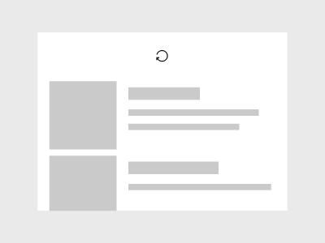
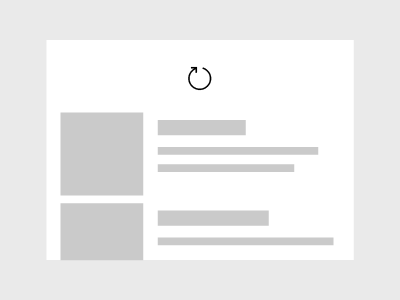
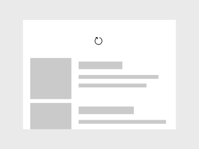

Pull to refresh
Pull-to-refresh lets a user pull down on a list of data using touch in order to retrieve more data. Pull-to-refresh is widely used on devices with a touch screen. You can use the APIs shown here to implement pull-to-refresh in your app.

Is this the right control?
Use pull-to-refresh when you have a list or grid of data that the user might want to refresh regularly, and your app is likely to be running on touch-first devices.
You can also use the RefreshVisualizer to create a consistent refresh experience that is invoked in other ways, such as by a refresh button.
Refresh controls
Pull-to-refresh is enabled by 2 controls.
- RefreshContainer - a ContentControl that provides a wrapper for the pull-to-refresh experience. It handles the touch interactions and manages the state of its internal refresh visualizer.
- RefreshVisualizer - encapsulates the refresh visualization explained in the next section.
The main control is the RefreshContainer, which you place as a wrapper around the content that the user pulls to trigger a refresh. RefreshContainer works only with touch, so we recommend that you also have a refresh button available for users who don't have a touch interface. You can position the refresh button at a suitable location in the app, either on a command bar or at a location close to the surface being refreshed.
Refresh visualization
The default refresh visualization is a circular progress spinner that is used to communicate when a refresh will happen and the progress of the refresh after it is initiated. The refresh visualizer has 5 states.
The distance the user needs to pull down on a list to initiate a refresh is called the threshold. The visualizer State is determined by the pull state as it relates to this threshold. The possible values are contained in the RefreshVisualizerState enumeration.
Idle
The visualizer's default state is Idle. The user is not interacting with the RefreshContainer via touch, and there is not a refresh in progress.
Visually, there is no evidence of the refresh visualizer.
Interacting
When the user pulls the list in the direction specified by the PullDirection property, and before the threshold is reached, the visualizer is in the Interacting state.
If the user releases the control while in this state, the control returns to Idle.

Visually, the icon is displayed as disabled (60% opacity). In addition, the icon spins one full rotation with the scroll action.
If the user pulls the list past the threshold, the visualizer transitions from Interacting to Pending.

Visually, the icon switches to 100% opacity and pulses in size up to 150% and then back to 100% size during the transition.
Pending
When the user has pulled the list past the threshold, the visualizer is in the Pending state.
- If the user moves the list back above the threshold without releasing it, it returns to the Interacting state.
- If the user releases the list, a refresh request is initiated and it transitions to the Refreshing state.

Visually, the icon is 100% in both size and opacity. In this state, the icon continues to move down with the scroll action but no longer spins.
Refreshing
When the user releases the visualiser past the threshold, it's in the Refreshing state.
When this state is entered, the RefreshRequested event is raised. This is the signal to start the app's content refresh. The event args (RefreshRequestedEventArgs) contain a Deferral object, which you should take a handle to in the event handler. Then, you should mark the deferral as completed when your code to perform the refresh has completed.
When the refresh is complete, the visualizer returns to the Idle state.
Visually, the icon settles back to the threshold location and spins for the duration of the refresh. This spinning is used to show progress of the refresh and is replaced by the animation of the incoming content.
Peeking
When the user pulls in the refresh direction from a start position where a refresh is not allowed, the visualizer enters the Peeking state. This typically happens when the ScrollViewer is not at position 0 when the user starts to pull.
- If the user releases the control while in this state, the control returns to Idle.
Pull direction
By default, the user pulls a list from top to bottom to initiate a refresh. If you have a list or grid with a different orientation, you should change the pull direction of the refresh container to match.
The PullDirection property takes one of these RefreshPullDirection values: BottomToTop, TopToBottom, RightToLeft, or LeftToRight.
When you change the pull direction, the starting position of the visualizer's progress spinner automatically rotates so the arrow starts in the appropriate position for the pull direction. If needed, you can change the RefreshVisualizer.Orientation property to override the automatic behavior. In most cases, we recommend leaving the default value of Auto.
Implement pull-to-refresh
- Important APIs: RefreshContainer, RefreshVisualizer
The WinUI 3 Gallery app includes interactive examples of most WinUI 3 controls, features, and functionality. Get the app from the Microsoft Store or get the source code on GitHub
To add pull-to-refresh functionality to a list requires just a few steps.
- Wrap your list in a RefreshContainer control.
- Handle the RefreshRequested event to refresh your content.
- Optionally, initiate a refresh by calling RequestRefresh (for example, from a button click).
Note
You can instantiate a RefreshVisualizer on its own. However, we recommend that you wrap your content in a RefreshContainer and use the RefreshVisualizer provided by the RefreshContainer.Visualizer property, even for non-touch scenarios. In this article, we assume that the visualizer is always obtained from the refresh container.
In addition, use the refresh container's RequestRefresh and RefreshRequested members for convenience. refreshContainer.RequestRefresh() is equivalent to refreshContainer.Visualizer.RequestRefresh(), and either will raise both the RefreshContainer.RefreshRequested event and the RefreshVisualizer.RefreshRequested events.
Request a refresh
The refresh container handles touch interactions to let a user refresh content via touch. We recommend that you provide other affordances for non-touch interfaces, like a refresh button or voice control.
To initiate a refresh, call the RequestRefresh method.
// See the Examples section for the full code.
private void RefreshButtonClick(object sender, RoutedEventArgs e)
{
RefreshContainer.RequestRefresh();
}
When you call RequestRefresh, the visualizer state goes directly from Idle to Refreshing.
Handle a refresh request
To get fresh content when needed, handle the RefreshRequested event. In the event handler, you'll need code specific to your app to get the fresh content.
The event args (RefreshRequestedEventArgs) contain a Deferral object. Get a handle to the deferral in the event handler. Then, mark the deferral as completed when your code to perform the refresh has completed.
// See the Examples section for the full code.
private async void RefreshContainer_RefreshRequested(RefreshContainer sender, RefreshRequestedEventArgs args)
{
// Respond to a request by performing a refresh and using the deferral object.
using (var RefreshCompletionDeferral = args.GetDeferral())
{
// Do some async operation to refresh the content
await FetchAndInsertItemsAsync(3);
// The 'using' statement ensures the deferral is marked as complete.
// Otherwise, you'd call
// RefreshCompletionDeferral.Complete();
// RefreshCompletionDeferral.Dispose();
}
}
Respond to state changes
You can respond to changes in the visualizer's state, if needed. For example, to prevent multiple refresh requests, you can disable a refresh button while the visualizer is refreshing.
// See the Examples section for the full code.
private void Visualizer_RefreshStateChanged(RefreshVisualizer sender, RefreshStateChangedEventArgs args)
{
// Respond to visualizer state changes.
// Disable the refresh button if the visualizer is refreshing.
if (args.NewState == RefreshVisualizerState.Refreshing)
{
RefreshButton.IsEnabled = false;
}
else
{
RefreshButton.IsEnabled = true;
}
}
Using a ScrollViewer in a RefreshContainer
Note
The Content of a RefreshContainer must be a scrollable control, such as ScrollViewer, GridView, ListView, etc. Setting the Content to a control like Grid will result in undefined behavior.
This example shows how to use pull-to-refresh with a scroll viewer.
<RefreshContainer>
<ScrollViewer VerticalScrollMode="Enabled"
VerticalScrollBarVisibility="Auto"
HorizontalScrollBarVisibility="Auto">
<!-- Scrollviewer content -->
</ScrollViewer>
</RefreshContainer>
Adding pull-to-refresh to a ListView
This example shows how to use pull-to-refresh with a list view.
<StackPanel Margin="0,40" Width="280">
<CommandBar OverflowButtonVisibility="Collapsed">
<AppBarButton x:Name="RefreshButton" Click="RefreshButtonClick"
Icon="Refresh" Label="Refresh"/>
<CommandBar.Content>
<TextBlock Text="List of items"
Style="{StaticResource TitleTextBlockStyle}"
Margin="12,8"/>
</CommandBar.Content>
</CommandBar>
<RefreshContainer x:Name="RefreshContainer">
<ListView x:Name="ListView1" Height="400">
<ListView.ItemTemplate>
<DataTemplate x:DataType="local:ListItemData">
<Grid Height="80">
<Grid.RowDefinitions>
<RowDefinition Height="Auto" />
<RowDefinition Height="Auto" />
<RowDefinition Height="*" />
</Grid.RowDefinitions>
<TextBlock Text="{x:Bind Path=Header}"
Style="{StaticResource SubtitleTextBlockStyle}"
Grid.Row="0"/>
<TextBlock Text="{x:Bind Path=Date}"
Style="{StaticResource CaptionTextBlockStyle}"
Grid.Row="1"/>
<TextBlock Text="{x:Bind Path=Body}"
Style="{StaticResource BodyTextBlockStyle}"
Grid.Row="2"
Margin="0,4,0,0" />
</Grid>
</DataTemplate>
</ListView.ItemTemplate>
</ListView>
</RefreshContainer>
</StackPanel>
public sealed partial class MainPage : Page
{
public ObservableCollection<ListItemData> Items { get; set; }
= new ObservableCollection<ListItemData>();
public MainPage()
{
this.InitializeComponent();
Loaded += MainPage_Loaded;
ListView1.ItemsSource = Items;
}
private async void MainPage_Loaded(object sender, RoutedEventArgs e)
{
Loaded -= MainPage_Loaded;
RefreshContainer.RefreshRequested += RefreshContainer_RefreshRequested;
RefreshContainer.Visualizer.RefreshStateChanged += Visualizer_RefreshStateChanged;
// Add some initial content to the list.
await FetchAndInsertItemsAsync(2);
}
private void RefreshButtonClick(object sender, RoutedEventArgs e)
{
RefreshContainer.RequestRefresh();
}
private async void RefreshContainer_RefreshRequested(RefreshContainer sender, RefreshRequestedEventArgs args)
{
// Respond to a request by performing a refresh and using the deferral object.
using (var RefreshCompletionDeferral = args.GetDeferral())
{
// Do some async operation to refresh the content
await FetchAndInsertItemsAsync(3);
// The 'using' statement ensures the deferral is marked as complete.
// Otherwise, you'd call
// RefreshCompletionDeferral.Complete();
// RefreshCompletionDeferral.Dispose();
}
}
private void Visualizer_RefreshStateChanged(RefreshVisualizer sender, RefreshStateChangedEventArgs args)
{
// Respond to visualizer state changes.
// Disable the refresh button if the visualizer is refreshing.
if (args.NewState == RefreshVisualizerState.Refreshing)
{
RefreshButton.IsEnabled = false;
}
else
{
RefreshButton.IsEnabled = true;
}
}
// App specific code to get fresh data.
private async Task FetchAndInsertItemsAsync(int updateCount)
{
for (int i = 0; i < updateCount; ++i)
{
// Simulate delay while we go fetch new items.
await Task.Delay(1000);
Items.Insert(0, GetNextItem());
}
}
private ListItemData GetNextItem()
{
return new ListItemData()
{
Header = "Header " + DateTime.Now.Second.ToString(),
Date = DateTime.Now.ToLongDateString(),
Body = DateTime.Now.ToLongTimeString()
};
}
}
public class ListItemData
{
public string Header { get; set; }
public string Date { get; set; }
public string Body { get; set; }
}
UWP and WinUI 2
Important
The information and examples in this article are optimized for apps that use the Windows App SDK and WinUI 3, but are generally applicable to UWP apps that use WinUI 2. See the UWP API reference for platform specific information and examples.
This section contains information you need to use the control in a UWP or WinUI 2 app.
The refresh controls for UWP apps are included as part of WinUI 2. For more info, including installation instructions, see WinUI 2. APIs for this control exist in both the Windows.UI.Xaml.Controls (UWP) and Microsoft.UI.Xaml.Controls (WinUI) namespaces.
- UWP APIs: RefreshContainer, RefreshVisualizer
- WinUI 2 Apis: RefreshContainer, RefreshVisualizer
- Open the WinUI 2 Gallery app and see PullToRefresh in action. The WinUI 2 Gallery app includes interactive examples of most WinUI 2 controls, features, and functionality. Get the app from the Microsoft Store or get the source code on GitHub.
We recommend using the latest WinUI 2 to get the most current styles, templates, and features for all controls.
To use the code in this article with WinUI 2, use an alias in XAML (we use muxc) to represent the Windows UI Library APIs that are included in your project. See Get Started with WinUI 2 for more info.
xmlns:muxc="using:Microsoft.UI.Xaml.Controls"
<muxc:RefreshContainer />